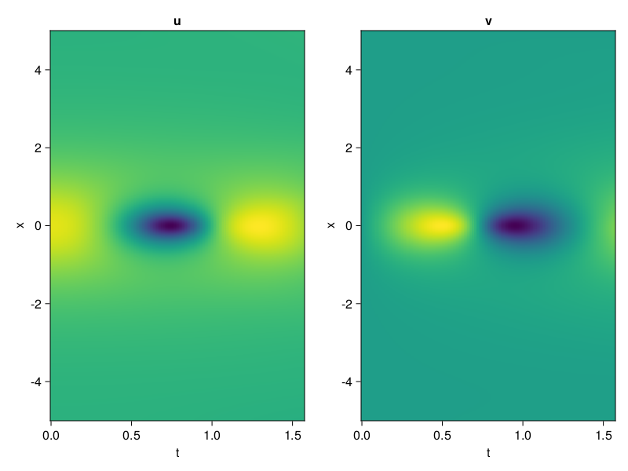
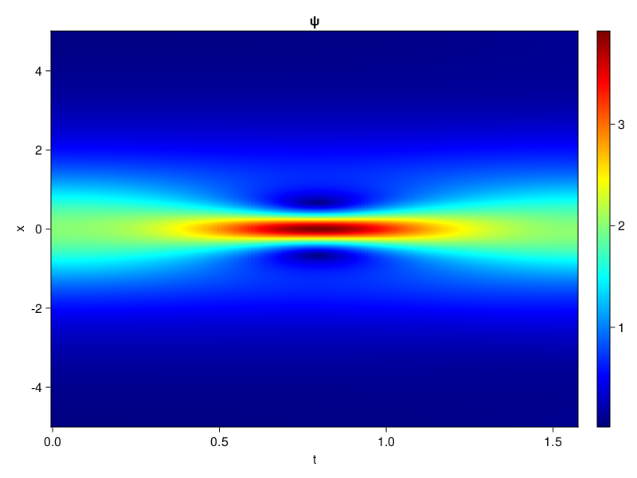
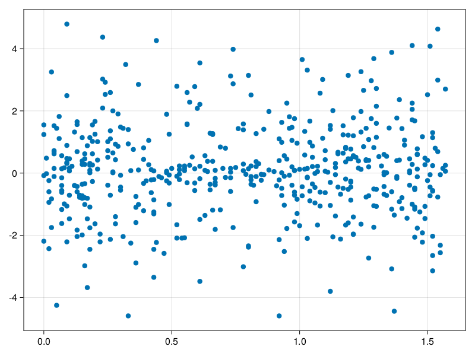

Schrödinger equation
The nonlinear Shrödinger equation is given by
\[\mathrm{i} \partial_t \psi=-\frac{1}{2} \sigma \partial_{x x} \psi-\beta|\psi|^2 \psi\]
Let $\sigma=\beta=1, \psi=u+v i$, the equation can be transformed into a system of partial differential equations
using ModelingToolkit, IntervalSets, Sophon, CairoMakie
using Optimization, OptimizationOptimJL
@parameters x,t
@variables u(..), v(..)
Dₜ = Differential(t)
Dₓ² = Differential(x)^2
eqs=[Dₜ(u(x,t)) ~ -Dₓ²(v(x,t))/2 - (abs2(v(x,t)) + abs2(u(x,t))) * v(x,t),
Dₜ(v(x,t)) ~ Dₓ²(u(x,t))/2 + (abs2(v(x,t)) + abs2(u(x,t))) * u(x,t)]
bcs = [u(x, 0.0) ~ 2sech(x),
v(x, 0.0) ~ 0.0,
u(-5.0, t) ~ u(5.0, t),
v(-5.0, t) ~ v(5.0, t)]
domains = [x ∈ Interval(-5.0, 5.0),
t ∈ Interval(0.0, π/2)]
@named pde_system = PDESystem(eqs, bcs, domains, [x,t], [u(x,t),v(x,t)])\[ \begin{align} \frac{\mathrm{d}}{\mathrm{d}t} u\left( x, t \right) =& - \frac{1}{2} \frac{\mathrm{d}}{\mathrm{d}x} \frac{\mathrm{d}}{\mathrm{d}x} v\left( x, t \right) - \left( \left|u\left( x, t \right)\right|^{2} + \left|v\left( x, t \right)\right|^{2} \right) v\left( x, t \right) \\ \frac{\mathrm{d}}{\mathrm{d}t} v\left( x, t \right) =& \frac{1}{2} \frac{\mathrm{d}}{\mathrm{d}x} \frac{\mathrm{d}}{\mathrm{d}x} u\left( x, t \right) + \left( \left|u\left( x, t \right)\right|^{2} + \left|v\left( x, t \right)\right|^{2} \right) u\left( x, t \right) \end{align} \]
pinn = PINN(u = Siren(2,1; hidden_dims=16,num_layers=4, omega = 1.0),
v = Siren(2,1; hidden_dims=16,num_layers=4, omega = 1.0))
sampler = QuasiRandomSampler(500, (200,200,20,20))
strategy = NonAdaptiveTraining(1,(10,10,1,1))
prob = Sophon.discretize(pde_system, pinn, sampler, strategy)OptimizationProblem. In-place: true
u0: ComponentVector{Float64}(u = (layer_1 = (weight = [0.011035263538360596 -0.2951035499572754; 0.02130991220474243 0.08451306819915771; … ; 0.21860110759735107 -0.414378821849823; 0.33778566122055054 -0.36161476373672485], bias = [0.0; 0.0; … ; 0.0; 0.0;;]), layer_2 = (weight = [0.3383272886276245 0.5533142685890198 … 0.5370205640792847 -0.5220692753791809; 0.4361068308353424 -0.05978476256132126 … 0.431976318359375 -0.20838694274425507; … ; 0.5040676593780518 -0.06550391018390656 … 0.4026913046836853 0.20260348916053772; 0.21168555319309235 -0.08165008574724197 … 0.29600176215171814 0.41022735834121704], bias = [0.0; 0.0; … ; 0.0; 0.0;;]), layer_3 = (weight = [-0.1587274968624115 -0.001498115831054747 … 0.3950204849243164 0.34387123584747314; -0.4439169466495514 -0.2849166989326477 … 0.3545721471309662 -0.14327840507030487; … ; -0.19457970559597015 -0.38615092635154724 … -0.428739994764328 -0.3477286398410797; -0.19879847764968872 0.3765881657600403 … -0.2621902823448181 -0.12770630419254303], bias = [0.0; 0.0; … ; 0.0; 0.0;;]), layer_4 = (weight = [-0.19931620359420776 0.4336645305156708 … -0.5741066336631775 -0.3491942882537842; 0.42891788482666016 0.5624091625213623 … -0.08428598940372467 0.3036150634288788; … ; -0.5857670307159424 -0.22100763022899628 … -0.09836726635694504 -0.45579731464385986; 0.4063625633716583 0.12382064014673233 … 0.44199737906455994 0.5327335000038147], bias = [0.0; 0.0; … ; 0.0; 0.0;;]), layer_5 = (weight = [-0.3225794732570648 -0.5574565529823303 … 0.296094685792923 -0.261147677898407], bias = [0.0;;])), v = (layer_1 = (weight = [-0.343214213848114 0.21670669317245483; -0.03507131338119507 -0.320751428604126; … ; 0.10878968238830566 0.25110459327697754; -0.47031134366989136 0.24424684047698975], bias = [0.0; 0.0; … ; 0.0; 0.0;;]), layer_2 = (weight = [-0.48740118741989136 -0.45713841915130615 … -0.2261989861726761 0.387899786233902; 0.05820605531334877 -0.03586951643228531 … -0.4328967034816742 0.5991958379745483; … ; -0.010667633265256882 -0.24962016940116882 … 0.38442620635032654 -0.08573205769062042; -0.5398951768875122 0.44236478209495544 … 0.040646884590387344 -0.2688984274864197], bias = [0.0; 0.0; … ; 0.0; 0.0;;]), layer_3 = (weight = [-0.30888333916664124 0.08110528439283371 … 0.5068771243095398 0.18178775906562805; -0.44805553555488586 0.1409580111503601 … -0.21351070702075958 0.47270509600639343; … ; 0.25437280535697937 -0.3111632168292999 … -0.09716648608446121 -0.12948285043239594; 0.5632758736610413 -0.1487451195716858 … 0.27358660101890564 0.5966293811798096], bias = [0.0; 0.0; … ; 0.0; 0.0;;]), layer_4 = (weight = [0.00860390905290842 0.5043206214904785 … 0.4703461825847626 -0.48513585329055786; -0.441439151763916 -0.441166490316391 … -0.19276432693004608 -0.5752009153366089; … ; -0.5335803031921387 -0.1154152899980545 … -0.1879739761352539 -0.4659254848957062; -0.5124699473381042 0.3979599177837372 … -0.5751045346260071 -0.16353531181812286], bias = [0.0; 0.0; … ; 0.0; 0.0;;]), layer_5 = (weight = [0.46214017271995544 0.047368478029966354 … -0.05778425931930542 0.4936193823814392], bias = [0.0;;])))Now we train the neural nets and resample data while training.
function train(pde_system, prob, sampler, strategy, resample_period = 500, n=10)
bfgs = BFGS()
res = Optimization.solve(prob, bfgs; maxiters=2000)
for i in 1:n
data = Sophon.sample(pde_system, sampler)
prob = remake(prob; u0=res.u, p=data)
res = Optimization.solve(prob, bfgs; maxiters=resample_period)
end
return res
end
res = train(pde_system, prob, sampler, strategy)u: ComponentVector{Float64}(u = (layer_1 = (weight = [0.3400399923741431 -0.5498024545146952; 0.09386464055408555 0.08035639424859951; … ; 0.3686941693046142 0.15319949329578433; -0.1849083180214964 -0.15075091724187273], bias = [0.7234014974742704; 0.14549752440061464; … ; -0.06271817509444086; 0.22454569949961886;;]), layer_2 = (weight = [0.11911693493057154 0.7930418786473207 … 0.28482126154086873 -0.6142146001835525; 0.7023147438564873 -0.08725000247599558 … 0.4794834557031352 0.06493980613188635; … ; 0.6517804470150995 -0.39228676522776573 … 0.605078585845314 0.16358132320079288; 0.08103572340531293 -0.20374857428512932 … 0.11888826241243605 0.3195825370201476], bias = [-0.059141482304571114; 0.005310923249006742; … ; 0.2802030438086367; -0.40663070224972264;;]), layer_3 = (weight = [-0.0506029755743336 -0.027651688535564278 … 0.09718329602531076 0.28828923152824587; -0.576438937726863 -0.1971070901969898 … 0.044815094532977044 0.020391770636449834; … ; 0.23722930483159776 -0.6615023643395896 … -1.2308430612432653 -0.5123661196236744; -0.11027932393146869 0.4424526221882101 … 0.04323408088295819 -0.198656941951572], bias = [0.21471454707783344; -0.3538588039376205; … ; -0.12086017288550971; -0.08216716943006165;;]), layer_4 = (weight = [-0.2445585675934086 0.03553973899339199 … -0.27904543172770085 -0.6014933302182035; 0.5274674636706096 0.6262388753745238 … -0.004009250193506567 0.12447348917884507; … ; -0.17572315215704862 0.13581104901804794 … -0.3195257222968662 -0.554665509393845; 0.2790407964432789 0.5306658431210816 … 0.0702576687227108 0.022745348846990913], bias = [0.1358341354893312; -0.385799430335201; … ; -0.2243441714546073; -0.45290044137869656;;]), layer_5 = (weight = [-0.7233941667818138 -0.820224083345655 … 0.3797442738102997 -0.502234584774956], bias = [0.2429042160608624;;])), v = (layer_1 = (weight = [-0.5052559199990684 -0.1716802769377825; 0.02292818996100519 0.2851746569766796; … ; 0.35233580936491177 0.2715192962492474; -1.233695693149609 -0.12413831116927646], bias = [0.11293717586112574; -0.4640338534340453; … ; -0.3283084508397517; 0.2462678265549641;;]), layer_2 = (weight = [-0.43102677630574576 -0.6717087227715146 … -0.26647929165600487 -0.10339505807061526; 0.3513081985626419 0.05540794482572051 … -0.8560362655298108 0.8867537188337519; … ; 0.07015519368346604 -0.2779019875399359 … 0.5137012141181028 -0.45806896409016634; -0.6412765075686402 -0.002992355777229318 … 0.38557024711102095 0.09681035942501502], bias = [0.5510046416149211; -0.08324578835257482; … ; 0.049376153803570993; 0.32428726715583167;;]), layer_3 = (weight = [-0.29454700540849726 0.1285289972119728 … 0.044182156693715335 -0.21586826493348982; -0.3396795514632436 -0.04252166372016307 … -0.06493862157028185 0.10176475727736042; … ; 0.5642091990029996 0.05451381482576011 … 0.1809501925934185 0.16015492270111373; 0.5108493038245515 0.00534027397573314 … 0.1445598759586401 0.769602445870453], bias = [-0.050247617444444254; -0.22001107733563974; … ; 0.3729824918863072; -0.3477538098611951;;]), layer_4 = (weight = [-0.3298829569057271 0.30223517104008635 … 0.08788479746840044 -0.7177675231527689; -0.1780610523451863 -0.5610992598991449 … -0.6802411834986485 -1.0267388036629015; … ; -0.5484706249752137 -0.046017144166062306 … -0.23701654835997485 -0.5553734102719035; -0.477874627602303 0.20845773678772703 … -0.7843777111962549 -0.08546369189414468], bias = [-0.04524992175265786; 0.09182736325496965; … ; 0.07330253356342088; 0.3004225747349286;;]), layer_5 = (weight = [0.19011532623243058 0.7046269807310055 … -0.07097465563642831 1.0907595906061711], bias = [0.25930756947627837;;])))phi = pinn.phi
ps = res.u
xs, ts= [infimum(d.domain):0.01:supremum(d.domain) for d in pde_system.domain]
u = [sum(phi.u(([x,t]), ps.u)) for x in xs, t in ts]
v = [sum(phi.v(([x,t]), ps.v)) for x in xs, t in ts]
ψ = @. sqrt(u^2+ v^2)
axis = (xlabel="t", ylabel="x", title="u")
fig, ax1, hm1 = heatmap(ts, xs, u', axis=axis)
ax2, hm2= heatmap(fig[1, end+1], ts, xs, v', axis= merge(axis, (; title="v")))
display(fig)
axis = (xlabel="t", ylabel="x", title="ψ")
fig, ax1, hm1 = heatmap(ts, xs, ψ', axis=axis, colormap=:jet)
Colorbar(fig[:, end+1], hm1)
display(fig)
Customize Sampling
Bascially any sampling method is supportted. For example we can sample data according to the predicted solution.
using StatsBase
data = vec([[x, t] for x in xs, t in ts])
wv = vec(ψ)
new_data = wsample(data, wv, 500)
new_data = reduce(hcat, new_data)
fig, ax = scatter(new_data[2,:], new_data[1,:])
prob.p[1] = new_data
prob.p[2] = new_data
prob = remake(prob; u0 = res.u)
# res = Optimization.solve(prob, bfgs; maxiters=1000)OptimizationProblem. In-place: true
u0: ComponentVector{Float64}(u = (layer_1 = (weight = [0.3400399923741431 -0.5498024545146952; 0.09386464055408555 0.08035639424859951; … ; 0.3686941693046142 0.15319949329578433; -0.1849083180214964 -0.15075091724187273], bias = [0.7234014974742704; 0.14549752440061464; … ; -0.06271817509444086; 0.22454569949961886;;]), layer_2 = (weight = [0.11911693493057154 0.7930418786473207 … 0.28482126154086873 -0.6142146001835525; 0.7023147438564873 -0.08725000247599558 … 0.4794834557031352 0.06493980613188635; … ; 0.6517804470150995 -0.39228676522776573 … 0.605078585845314 0.16358132320079288; 0.08103572340531293 -0.20374857428512932 … 0.11888826241243605 0.3195825370201476], bias = [-0.059141482304571114; 0.005310923249006742; … ; 0.2802030438086367; -0.40663070224972264;;]), layer_3 = (weight = [-0.0506029755743336 -0.027651688535564278 … 0.09718329602531076 0.28828923152824587; -0.576438937726863 -0.1971070901969898 … 0.044815094532977044 0.020391770636449834; … ; 0.23722930483159776 -0.6615023643395896 … -1.2308430612432653 -0.5123661196236744; -0.11027932393146869 0.4424526221882101 … 0.04323408088295819 -0.198656941951572], bias = [0.21471454707783344; -0.3538588039376205; … ; -0.12086017288550971; -0.08216716943006165;;]), layer_4 = (weight = [-0.2445585675934086 0.03553973899339199 … -0.27904543172770085 -0.6014933302182035; 0.5274674636706096 0.6262388753745238 … -0.004009250193506567 0.12447348917884507; … ; -0.17572315215704862 0.13581104901804794 … -0.3195257222968662 -0.554665509393845; 0.2790407964432789 0.5306658431210816 … 0.0702576687227108 0.022745348846990913], bias = [0.1358341354893312; -0.385799430335201; … ; -0.2243441714546073; -0.45290044137869656;;]), layer_5 = (weight = [-0.7233941667818138 -0.820224083345655 … 0.3797442738102997 -0.502234584774956], bias = [0.2429042160608624;;])), v = (layer_1 = (weight = [-0.5052559199990684 -0.1716802769377825; 0.02292818996100519 0.2851746569766796; … ; 0.35233580936491177 0.2715192962492474; -1.233695693149609 -0.12413831116927646], bias = [0.11293717586112574; -0.4640338534340453; … ; -0.3283084508397517; 0.2462678265549641;;]), layer_2 = (weight = [-0.43102677630574576 -0.6717087227715146 … -0.26647929165600487 -0.10339505807061526; 0.3513081985626419 0.05540794482572051 … -0.8560362655298108 0.8867537188337519; … ; 0.07015519368346604 -0.2779019875399359 … 0.5137012141181028 -0.45806896409016634; -0.6412765075686402 -0.002992355777229318 … 0.38557024711102095 0.09681035942501502], bias = [0.5510046416149211; -0.08324578835257482; … ; 0.049376153803570993; 0.32428726715583167;;]), layer_3 = (weight = [-0.29454700540849726 0.1285289972119728 … 0.044182156693715335 -0.21586826493348982; -0.3396795514632436 -0.04252166372016307 … -0.06493862157028185 0.10176475727736042; … ; 0.5642091990029996 0.05451381482576011 … 0.1809501925934185 0.16015492270111373; 0.5108493038245515 0.00534027397573314 … 0.1445598759586401 0.769602445870453], bias = [-0.050247617444444254; -0.22001107733563974; … ; 0.3729824918863072; -0.3477538098611951;;]), layer_4 = (weight = [-0.3298829569057271 0.30223517104008635 … 0.08788479746840044 -0.7177675231527689; -0.1780610523451863 -0.5610992598991449 … -0.6802411834986485 -1.0267388036629015; … ; -0.5484706249752137 -0.046017144166062306 … -0.23701654835997485 -0.5553734102719035; -0.477874627602303 0.20845773678772703 … -0.7843777111962549 -0.08546369189414468], bias = [-0.04524992175265786; 0.09182736325496965; … ; 0.07330253356342088; 0.3004225747349286;;]), layer_5 = (weight = [0.19011532623243058 0.7046269807310055 … -0.07097465563642831 1.0907595906061711], bias = [0.25930756947627837;;])))